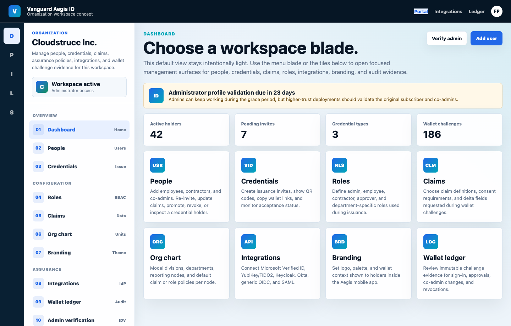

Dashboard
Default bladeA light landing surface after selecting an organization. It explains the workspace areas and routes admins into focused blades.
- 1Minimal summary with active holder, pending invite, credential type, and wallet challenge counts.
- 2Quick action tiles for People, Credentials, Roles, Claims, Org chart, Integrations, Branding, and Ledger.
- 3Dismissible administrator verification reminder with countdown context.